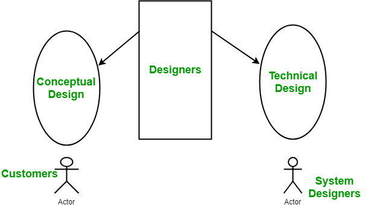
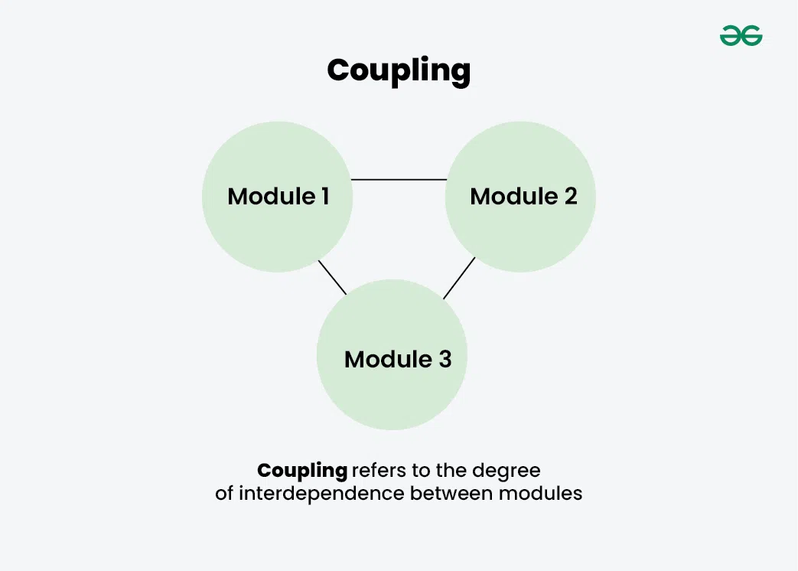
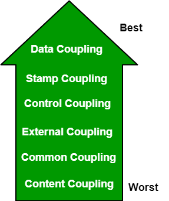
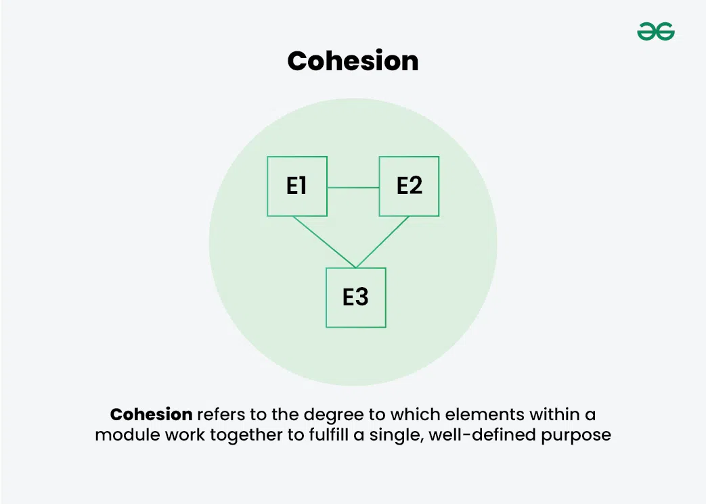
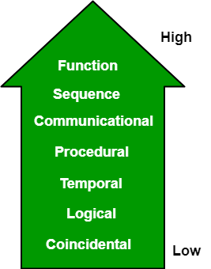

5.10 Coupling and Cohesion (+ Measures)
The purpose of the design phase in the Software Development Life Cycle is to produce a solution to the problem given in the SRS (Software Requirements Specification). The output of the design phase is a Software Design Document (SDD).
Coupling and cohesion are two key concepts in software engineering used to measure the quality of a software system's design. Together they determine the maintainability, scalability, and reliability of the system.
What is coupling and cohesion?
- Coupling refers to the degree of interdependence between software modules — an inter-module concept.
- High coupling means modules are closely connected, and changes in one module may affect other modules.
- Low coupling means modules are largely independent, and changes in one module have little impact on others.
- Cohesion refers to the degree to which elements within a module work together to fulfil a single, well-defined purpose — an intra-module concept.
- High cohesion means elements are closely related and focused on one purpose.
- Low cohesion means elements are loosely related and serve multiple unrelated purposes.
- Design goal: low coupling and high cohesion — modules should be independent of each other but strongly focused internally.

High coupling and low cohesion make a system difficult to change and test, while low coupling and high cohesion make a system easier to maintain and improve.
Design as a two-part iterative process
Software design is basically a two-part iterative process:
1. Conceptual design
- Conceptual design tells the customer what the system will do.
- It is written in simple, customer-understandable language.
- It gives a detailed explanation of system characteristics and describes the functionality of the system.
- It is independent of implementation and is linked with the requirements document.
2. Technical design
- Technical design allows system builders to understand the actual hardware and software needed to solve the customer's problem.
- It specifies hardware components and design.
- It defines the functionality and hierarchy of software components, software architecture, and network architecture.
- It describes data structures, data flow, I/O components, and interfaces between system parts.
Modularization
Modularization is the process of dividing a software system into multiple independent modules where each module works independently. See §5.6 for full coverage.
- Modularization makes the system easy to understand because each module handles a specific responsibility.
- System maintenance becomes easier because changes can be localised to individual modules.
- A module can be reused many times wherever required, so there is no need to rewrite the same logic repeatedly.
Coupling
Coupling is the measure of the degree of interdependence between modules. A good software design will have low coupling.

Types of coupling — syllabus (worst → best)

- 1. Content coupling (worst): One module can modify the data of another module, or control flow is passed from one module to the other. This is the worst form of coupling and should be avoided.
- 2. Common coupling: Modules share global data such as global data structures. Changes to global data require tracing back to all modules that access it to evaluate the effect of the change, which reduces maintainability and makes reuse difficult.
- 3. External coupling: Modules depend on externally imposed data formats, protocols, devices, or hardware outside the software being developed. Example: a specific protocol, external file format, or device interface.
- 4. Control coupling: Modules communicate by passing control information such as flags or mode switches. It can be bad when parameters indicate completely different behaviour, but acceptable when parameters allow factoring and reuse of functionality. Example: a sort function that takes a comparison function as an argument.
- 5. Stamp coupling: A complete data structure is passed from one module to another when only part of the structure is needed, which involves tramp data. It may be necessary for efficiency reasons when chosen by an insightful designer rather than a lazy programmer.
- 6. Data coupling (best): Modules communicate only by passing simple data values as parameters. The components remain independent and communicate through data without tramp data or shared control. Example: a customer billing system where modules pass only the required values.
Other coupling types (extended awareness)
- Temporal coupling: Two modules depend on the timing or order of events, such as one module needing to execute before another. This can create design issues and make testing and maintenance difficult.
- Sequential coupling: The output of one module is used as the input of another module, creating a chain of dependencies that can be hard to maintain and modify.
- Communicational coupling: Two or more modules share a common communication mechanism such as a shared message queue or database, which can lead to performance issues and debugging difficulty.
- Functional coupling: Two modules depend on each other's functionality, such as one module calling a function from another module, resulting in tightly coupled code that is difficult to modify.
- Data-structured coupling: Two or more modules share a common data structure such as a database table or data file, which can affect data integrity and performance.
- Interaction coupling: Coupling that arises when methods of one class invoke methods of other classes. Coupling is lowest when methods communicate through parameters rather than directly accessing internal parts of other methods.
- Component coupling: Interaction between classes where one class has variables of another class — for example, an instance variable, method parameter, or local variable of the other class's type. Component coupling usually implies interaction coupling as well.
Cohesion
Cohesion is a measure of the degree to which the elements of a module are functionally related. It is the internal glue that keeps the module together. A good software design will have high cohesion.

Types of cohesion — syllabus (worst → best)

- 1. Coincidental cohesion (worst): Elements are unrelated and have no conceptual relationship other than being located in the same source code. It is accidental and the worst form of cohesion. Example: a module that prints the next line and reverses the characters of a string.
- 2. Logical cohesion: Elements are logically related but not functionally related. Example: a component that reads inputs from tape, disk, and network — the operations are related in concept but the functions are significantly different.
- 3. Temporal cohesion: Elements are related by timing — all tasks must be executed in the same time span. Example: a module that contains code for initializing all parts of the system at startup.
- 4. Procedural cohesion: Elements ensure the order of execution and form steps in a procedure, but the actions are still weakly connected and unlikely to be reusable. Example: calculate student GPA, print student record, calculate cumulative GPA, print cumulative GPA.
- 5. Communicational cohesion: Two or more elements operate on the same input data or contribute towards the same output data. Example: update a record in the database and send it to the printer.
- 6. Sequential cohesion: An element outputs data that becomes the input for another element, so data flows between the parts. This occurs naturally in functional programming languages.
- 7. Functional cohesion (best): Every essential element for a single computation is contained in the component, and all elements cooperate to perform one well-defined task. This is the ideal situation and leads to more maintainable and reusable code.
Other cohesion types (extended awareness)
- Informational cohesion: Elements are grouped together based on their relationship to a specific data structure or object, such as a module that operates on one data type. Common in object-oriented programming.
- Layer cohesion: Elements are grouped by level of abstraction or responsibility, such as a module that handles only low-level hardware interactions or only high-level business logic. Common in large-scale layered systems.
Advantages of low coupling
- Changes in one module have little or no impact on other modules, so maintenance becomes easier.
- Modules can be developed, tested, and debugged independently.
- Individual modules are easier to reuse in other systems or contexts.
- The overall system becomes more flexible and adaptable to changing requirements.
Advantages of high cohesion
- Each module has a clear, single purpose, which makes the system easier to understand.
- Modules are easier to test because all elements inside them relate to one function.
- Code inside a module is easier to reuse because it performs one well-defined job.
- Errors and changes are localised within the module, improving maintainability.
Disadvantages of high coupling
- A change in one module may force changes in many dependent modules.
- Testing becomes difficult because modules cannot be tested in isolation.
- Reusing a module in another system becomes hard because it depends heavily on other modules.
- The system becomes fragile, error-prone, and expensive to maintain over time.
Disadvantages of low cohesion
- A module performs many unrelated tasks, making it difficult to understand its purpose.
- Changes to one part of the module may unexpectedly affect unrelated parts.
- The module is hard to reuse because it does not represent a single, clear function.
- Testing and debugging become more complex because the module lacks a focused responsibility.
Impact on software quality
- High coupling combined with low cohesion makes a system difficult to change, test, and maintain.
- Low coupling combined with high cohesion makes a system easier to maintain, improve, and scale.
- Both coupling and cohesion are important factors in determining maintainability, scalability, and reliability.
Coupling and cohesion at architectural level
- During architectural design, designers do not stress individual module internals but concentrate on coupling and cohesion between modules.
- Modules are treated as black boxes, and the focus is on how they communicate and depend on each other.
- See the direct comparison table in §5.11.
Q: Define coupling and cohesion. List all types with examples. What is the design goal?
Model answer points:
- Coupling = inter-module dependence (low is good); cohesion = intra-module strength (high is good).
- Coupling types (6): content → common → external → control → stamp → data (best).
- Cohesion types (7): coincidental → logical → temporal → procedural → communicational → sequential → functional (best).
- Goal: high cohesion + low coupling.
- Advantages: low coupling = independent modules; high cohesion = focused modules.
- Disadvantages: high coupling = ripple changes; low cohesion = unfocused modules.
- Give one example for each type (e.g., data coupling = call-by-value; functional cohesion = mouse control module).